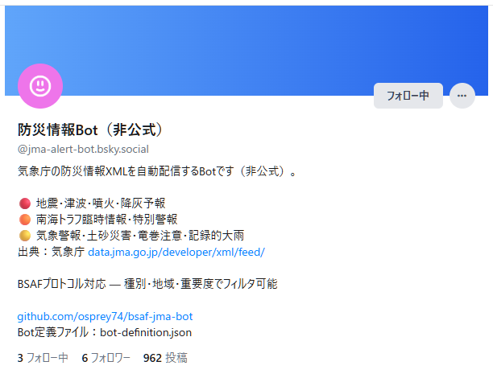
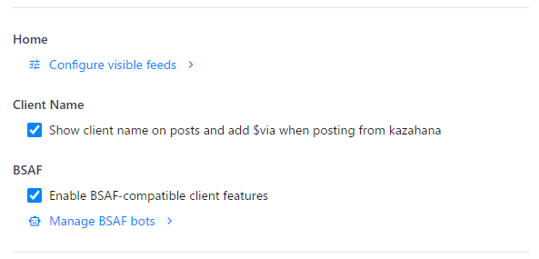
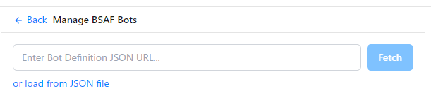
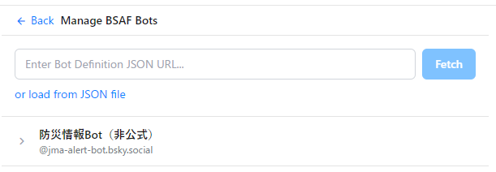
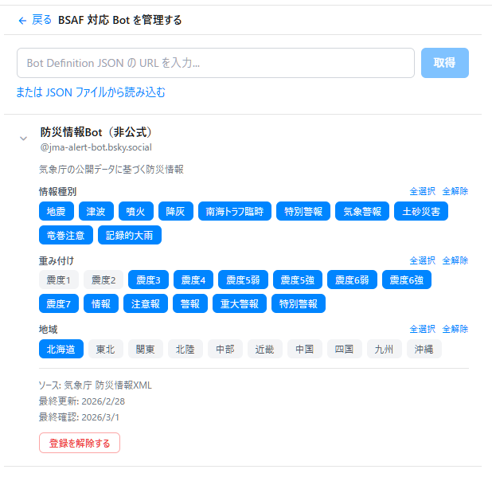

This guide walks you through registering a BSAF (Bluesky Structured Alert Framework) compatible bot in kazahana and configuring filters so you only receive the alerts that matter to you.
As an example, we will register bsaf-jma-bot (@jma-alert-bot.bsky.social), which delivers disaster information from the Japan Meteorological Agency.
On Bluesky, follow the account of the BSAF-compatible bot you want to register.
Tip: Creating a dedicated list for BSAF bots makes them easier to manage.

BSAF-compatible bots publish a Bot Definition JSON that contains all the information needed for filtering. To register a bot, you need one of the following:
| Method | Description |
|---|---|
| Distribution URL (recommended) | The URL of the JSON file, typically found in the bot's README or profile |
| JSON file | A previously downloaded JSON file |
For bsaf-jma-bot, the Bot Definition JSON URL is:
https://raw.githubusercontent.com/osprey74/bsaf-jma-bot/main/bot-definition.json

The "Manage BSAF Bots" screen will open. Load the Bot Definition JSON using one of the following methods:

Once registered, the BSAF bot's name and handle appear in the list.
Click the bot's name to open its filter settings panel.

The tags associated with the BSAF bot (alert types, regions, etc.) are displayed as a list.
Select the tags for the alerts you want to receive — selected tags turn blue. Only posts matching the selected tags will appear in your timeline.
For bsaf-jma-bot, the following tag groups are available:
| Tag group | Description | Examples |
|---|---|---|
| type (alert type) | Disaster categories to receive | earthquake, tsunami, eruption, etc. |
| value (severity) | Minimum severity threshold | Seismic intensity 3+, 5 lower+, etc. |
| target (region) | Target regions to monitor | jp-hokkaido (Hokkaido), jp-kanto (Kanto), etc. |
Tip: Selecting only your local region and disaster types of interest ensures you receive only the most relevant alerts.

After completing the setup, check your kazahana Timeline or List view.
Only posts from the BSAF bot that match the filter conditions you set in Step 6 will be displayed. Posts that do not match your filters are automatically hidden.

Follow the Bot → Obtain Bot Definition JSON → Enable BSAF
→ Register JSON → Configure Filters → Check Timeline